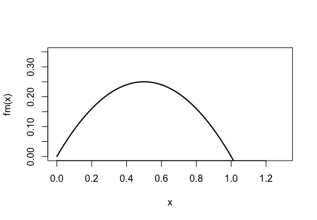

Le premmier modèle permet de modéliser l'évolution de l'amour au cours du temps en fonction du temps de travail. L'hypothèse mathématique étant relativement simple plus le temps de travail (\(Tw\)) est important, plus les résultats (\(R\)) croient mais moins les partenaires ont du temps à partager. Face à ce constat nous modélisons l'évolution des sentiments de chacun des partenaires nommés ici 1 et 2. ### Équation et paramètre
L'équation de l'amour de 1->2 et de 2->1 est de même forme générale. Nous proposons ici un modèle sans intéraction, autrement dit l'amour 1 pour 2 ne modifie pas l'amour de 2 pour 1 et réciproquement. En effet nous nous intéressons ici à l'effet des résultats, dépendant eux même du travail, sur les sentiments partagés par les partenaires. Le modèle est régit par l'équation suivante :
\[ x_{1}\prime = x_1 (x-m_1)(1-x_1) - \epsilon\\ \]
\[ x_{2}\prime = x_2 (x-m_2)(1-x_2) -\epsilon \]\(x_1\prime\) et respectivement \(x_2\prime\) représente l'amour de 1-2 et l'amour de 2->1, au cours du temps. L'intervalle de temps sur lequel est calculé les solutions est définit par l'utilisateur, l'unité de temps est la semaine. L'amour est compris inférieur 1 (\(x(t)<1\)), la passion amoureuse est atteinte lorsque \(x_i =1\), l'ignorance équivaut à (\(x_i =0\)) et la haine à (\(x_i<0\)). Les conditions initiales soit l'amour à \(t=0\) est choisit par l'utilisateur.
Les paramètre de cet EDO sont m1 et m2, qui équivalent à (\(1-\frac{ Tw_i}{Tmax}\)), où \(Tw_i\) est le temps de travail du partenaire\(_i\) à l'instant \(t=0\). \(Tmax\) est une estimation du temps de travail maximal pouvant être réalisé en une semaine, ici "arbitrairement" fixé à \(Tmax=35 h\). Ainsi définit \(m_i\in[0,1]\).
Le modèle proposé ci-dessus est stochastique, en effet on fait ici l'hypothèse que les relations amoureuses sont perturbées par des disputes. L'utilisateur choisit ainsi la fréquence de disputes (Nombre de dispute par mois). À partir de cette fréquence l'algorithme génére un échantillon alétoire tiré dans une lois binomiale, de taille équivalent au nombre de pas de temps. Pour chaque occurence de 1 une dispute est modélisée, lors d'une dispute \(\epsilon \neq 0\). L'ampleur de la dispute est quant à elle générée par tirage dans une loi normale centre d'écart type \(0.1\). On obtient finalement :
Si \(m_i = 0\) , il y a deux équilibres \(X_0^* =0\) et \(X_1^*=1\). Alors \(f_m(X)=(X)(X-1)\)

Dans ce cas si les résultats sont optimaux, c'est à dire : \[ m=0 \Rightarrow 1-R= 0 \Rightarrow R= \frac{T_{max}}{T_{max}} \] Les sentiments tendent vers la passion étant donné que \(X^*=0\) est un équilibre instable.
Si \(m\in[0,1]\), on a trois équilibre \(X^*=0\) ,\(X^*=1\) et \(X^*=m\). Alors \(f_m\) est égale à \(f_m (X)= -X^3 +X^2(1-m)-Xm\).


L'isocline \(X^*=m\) est instable, nous remarquons alors que plus m diminue (soit plus R augmente)ô plus le temps nécessaire pour atteindre l'isocline nulle augmente tel que :
Si \(m_i=1\), \(f_m(X_i)= X_i^3-X_i\). On a alors 2 équilibres \(X_0^*=0\) et \(X_1^*=1\)


Ainsi si \(m=1\) alors \(1-R=0\) et \(R=0\), alors on conclut que pour des résultats nuls les sentiments convergent vers l'ignorance.
Ce graphique représente les solutions du modèle, soit l'amour de 1->2 au cours du temps pour des valeur de M croissante de 0 à 1 et un amour initial égal à 0.5.
 !
!
Ce graphique représente la durée d'une relation soit le durée avant que les sentiment de 1->2 avoisine 0, selon la valeurs de M. On observe ainsi que le pérénnité d'un couple et négativement corrélée à M. En effet rapellons que \(M_1 = 1 - \frac{Tw}{T_{max}}\), où \(\frac{Tw}{T_{max}}\) traduit dans ce modèle les résultats de 1. Ainsi plus les sont faibles plus M augmente et moins la relation est pérenen.
 !
!
Das ce modèle nous faisons l'hypothèse idyllique que les résultats croissent au cours du temps en fonction du temps de travail selon l'équation suivante : \[R_i(t)^\prime = \frac{Tw_i}{Tmax} R_i (1 - R_i) \] Ainsi les résultats au temps t=0 sont défini par l'utilisateur, le temps de travail (Tw) détermine la vitesse de convergence vers les résultats optimaux (20/20).
Soit l'équation :
\[ R^\prime = \frac{Tw}{T_{max}}(R-R^2) \] \[ R^\prime - \frac{Tw}{T_{max}}(R-R^2) =0 \quad \text{(E1)}\] E1 est une EDO de Bernoulli, nous divisons cette EDO par \(R^2\) : \[R^\prime R^{-2} - \frac{Tw}{T_{max}} R^{-1}+ \frac{Tw}{T_{max}} =0 \] On pose une fonction u(t) telle que : \[ u(t) = R^{-1}(t) \qquad \text{où} t\in\mathbb{R}\] D'où \[u(t)^\prime = -2R^{-2}R^\prime \] On a alors: \[ R^{-2}R^\prime = \frac{-1}{2}u(t)^\prime \] Suite à ce changement de varible l'équation E1 s'écrit comme : \[\frac{-1}{2}u^ \prime - \frac{Tw}{T_{max}} u +\frac{Tw}{T_{max}} =0 \] \[u^ \prime +2 \frac{Tw}{T_{max}} u -2\frac{Tw}{T_{max}} =0 \quad \text{(E2)}\] E2 est une EDO linéaire que l'on sait résoudre et équivaut à: \[u^\prime + 2 \frac{Tw}{T_{max}} u = 2\frac{Tw}{T_{max}} \] On multiplie chaque membre de E2 par : \[ e^{\int_{0}^{t}\frac{2Tw}{T_{max}} ds}\] \[ e^{\frac{2Tw}{T_{max}} t}\] On a alors : \[(e^{\frac{2Tw}{T_{max}}t}u(t))^\prime = e^{\frac{2Tw}{T_{max}}t}\frac{2Tw}{T_{max}} \] On intègre entre t=0 et t : \[e^{\frac{2Tw}{T_{max}}t}u(t) - u_0 = \int_{0}^{t} e^{\frac{2Tw}{T_{max}} s}\frac{2Tw}{T_{max}} ds \] On a donc : \[u(t)=e^{\frac{-2Tw}{T_{max}}}[u_0 +\int_{0}^{t} e^{\frac{2Tw}{T_{max}} s}\frac{2Tw}{T_{max}} ds] \] \[u(t)= u_0e^{\frac{-2Tw}{T_{max}}} +e^{\frac{2Tw}{T_{max}}(-1+t)} \] Or comme : \[u(t) =R^{-1} \] On a : \[R(t) =\frac{1}{u_0e^{\frac{-2Tw}{T_{max}}} +e^{\frac{2Tw}{T_{max}}(-1+t)}} \]
Dans ce premier modèle simpliste la modélisation de l'amour en fonction des résultats (Cf : graphique ligne 3) est une simple relation linéaire telle que l'amour de 1->2 en fonction des résultats de 1 est : \[ A_{1}(t) = R_{1}(t) - R_{2}(t)-J_1\] Où \(J_1\) est le coefficient de jalousie de 1->2, paramètre choisi par l'utilisateur. L'amour 1->2 croit en fonction de ses résultats au cours du temps néanmoins ses sentiments sont pondérés par sa jalousie pour 2. Biensur la même relation est appliqué pour expliquer l'amour de 2->1 en fonction de la jalousie de 2 (\(J_2\)).